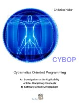

Books
All books on this page are published under the terms of the GNU Free Documentation License (FDL).
| Title | Authors | Information |
|---|---|---|
|
Cybernetics Oriented Language (CYBOL) Application Programming Interface (API) Specification 2016-03-07 |
Christian Schulz Lena Braun Former authors: Sebastian König Max Müller-Domhardt Johannes David Christian Heller |
|
|
Cybernetics Oriented Language (CYBOL) Application Programming Interface (API) Specification 2007-07-31 |
Christian Heller |
|
|
Cybernetics Oriented Programming (CYBOP). Ilmenau: Tux Tax, 2006 |
Christian Heller |
 |